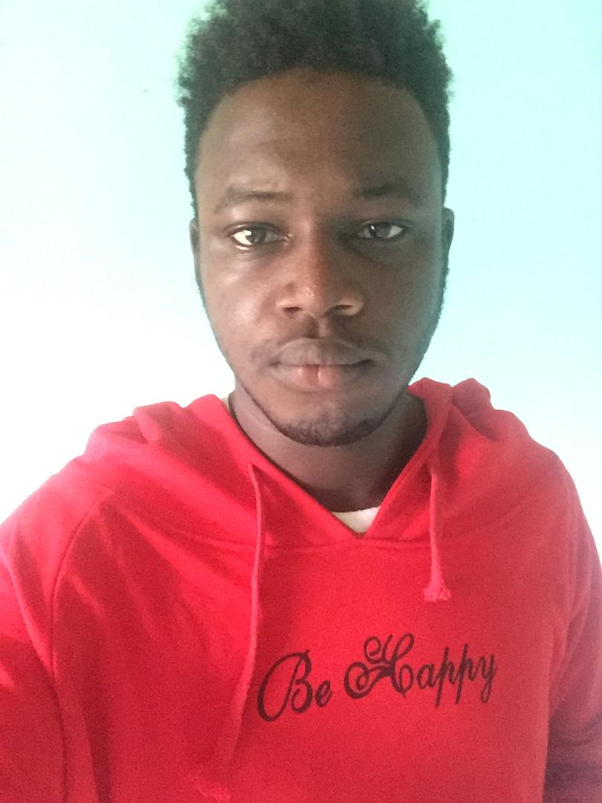
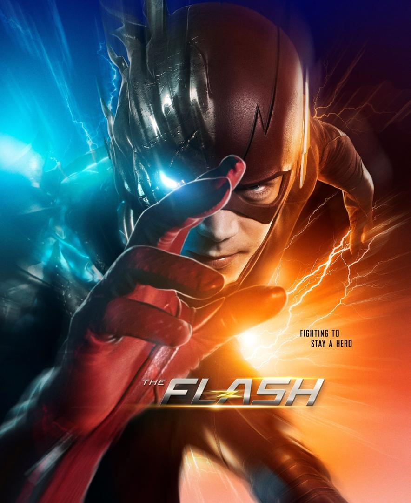

Nom : YENOT
Prénom : Junior
E-mail : junioryenot80@gmail.com
Téléphone : 06902144
Quartier : Alibandeng
Ville : Libreville
Pays : Gabon
voici une photo de moi
École publique d'alibandeng 2011-2012 (CEP et Concours)
Collège Ange Mba 2015-2016 (BEPC et admission au 2nd cycle)
Lycée Paul Indjendjet Gondjout «LPIG» 2018-2019 (BAC D’OFFICE)
Je me nomme Yenot Junior je réside à alibandeng et je suis le dernier d’une famille élargie . J’ai toujours été passionné par le monde virtuel (informatique) et tout ce qui concerne la crypto monnaie depuis l’apparition du bitcoin et de son buzz mon idéal project c’est plus au moins concrétiser et celui-ci est d’ouvrir l’une des meilleures banque d’exchange boursier sans oublier des e-commerce j’aimerais faire de ma passion pour l’informatique une source de revenus pour mettre bien les gens autour de moi voici à peu près ce que je suis et que j’aimerai être plutart.
Bonjour tout le monde bienvenue dans mon monde je sais jeux de mots pourris (:joy::grin:) je suis un jeune de 18 ans passionné de technologie depuis tout petit et j’ai toujours inspiré à être dans l’informatique déjà je me suis lancé dans plusieurs domaines concernant cette branche notamment la modification des scripts avec des amis étrangers les solutions pour reset des appareils et bien d’autres.
John Legend, né John Roger Stephens le 28 décembre 1978 à Springfield dans l'Ohio, est un compositeur, pianiste, acteur et chanteur de soul et de R'n'B américain et est de loin le style de musique que j'aime d'ou ma préférence pour ce morceau intitulé "all of me".
John legend all of me
Mon super hero préféré se nomme flash sous son masque et sans celui-ci il s'appelle barry allen dans la serie au lourd succès bien, sur il est doté d'une très grande vitesse et sauve des gens grace à cette capacitée en gros il fait juste son devoir de super hero
Merci de votre viste sur mon site